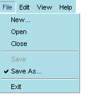

| [Table of Contents] [Previous:
Introduction to a XUL Document] [Next: Toolbars
and Toolboxes]
Feature Owner: Chris
Saari (Mac Menus), David Hyatt
(XP Menus)
Authors: David
Hyatt and Ian Oeschger
The Menu Bar
Menus
Menu Popups
Menu Items
Menu Types
Menu Styles
The Menu Bar
A XUL document can contain exactly one menu bar, specified using the
<menubar>
tag. As one might expect, this tag specifies the contents of the menu bar.
This menu bar is either placed inside the window (on Windows and GTK) or
is used as the menu bar when the window specified by the XUL file is the
active window (on the Mac).
If the XUL document is not opened as a top-level window (see Windows
and Dialogs), then the <menubar>
tag is ignored.
The menubar tag contains <menu> tags as children. Each menu
child represents one top-level menu on the menu bar.
<menubar>
<menu value="File"/>
<menu value="Edit"/>
<menu value="View"/>
<menu value="Help"/>
</menubar>
|
|
Menus
The value attribute on a <menu>
is the display name that is used for that menu. Menus contain a menupopup
tag that represents the popup view for a menu. In the menupopup, menu items
are represented using the <menuitem>
tag, and their display names are also set using the value
attribute.Separators are represented using the <menuseparator>
tag. This tag contains no children.
<menu value="File">
<menupopup>
<menuitem value="New..."/>
<menuitem value="Close"/>
<menuseparator/>
<menuitem value="Save"/>
<menuitem value="Save As..."/>
<menuseparator/>
<menuitem value="Exit"/>
</menupopup>
</menu>
|
|
Submenus
The menu popup can contain menu items or additional menus as children,
the distinction being that menus always have children, and menu items never
have children. When a menu is a child of a menu, it is displayed as a submenu.
<menu value="File">
<menupopup>
<menuitem value="New..."/>
<menu value="Open">
<menupopup>
<menuitem value="Open with Composer" />
<menuitem value="Open with Navigator" />
<menuitem value="Open with NoteTab" />
</menupopup>
</menu>
<menuitem value="Close"/>
<menuseparator/>
<menuitem value="Save" />
<menuitem value="Save As..."/>
<menuseparator/>
<menuitem value="Exit"/>
</menupopup>
</menu>
|
 |
Menu Popups
Menu popups are the menu area displayed below the menu itself:
When menus do not contain popups as children, they cannot display menu
content and appear only as labels in the menubar.
Positioning popups
The <menupopup> element has a couple of attributes that make
it possible to position it in various ways in relation to the menu itself.
The popupanchor attribute specifies where the popup will be anchored
on the menu when it pops up. The default value for menus in the menubar
is bottomleft. Possible values are bottomleft, bottomright,
topright,
and topleft. Bottomleft specifies that the popup will be
displayed underneath the menu and flush on the left side. For menus in
menu bars, all other values but bottomleft for popupanchor are ignored
because of the space constraints typical of menu bars. The
popupalign
attribute describes the position of the popup rather than the menu. In
the File menu below, the arrow is pointing to the anchor point of the menu
and the alignment point of the popup.
Together, these two attributes give you expert-level control overt
the positioning of menus in your application. The menu buttons in the taskbar
on the bottom of the navigator are an example of an instance where this
sort of control might be necessary. The taskbar menus should pop UP rather
than DOWN, since they're located at the bottom of the window. In
this case, a popupanchor of topleft and a popupalign
of bottomleft should be used to display the menus clearly.
Menu Items
On platforms other than the Macintosh, menus and menu items may contain
arbitrary HTML/XUL. If HTML/XUL is placed inside a menu item or menu, it
will be used as the menu's look (rather than the display text and accelerator
text used by default if no HTML/XUL children are specified). Be aware if
you choose to do this that the Macintosh cannot display these tags. Always
have a value attribute and an oncommand attribute on menu items to ensure
interoperability with the Mac.
Executing Menu Commands
The oncommand attribute can be used to invoke commands when particular
menu items are chosen. In the following example, the window closes when
the Close menu item is chosen from the File menu.
<menu value="File"/>
<menuitem value="New..."/>
<menuitem value="Close" oncommand="window.close()"/>
<separator/>
<menuitem value="Save"/>
<menuitem value="Save As..."/>
<separator/>
<menuitem value="Exit"/>
</menu>
|
The command event is executed whenever
a menu item is invoked. This event can be added through script (via the
addEventListener
AOM API), or an oncommand attribute
can be placed on the <menuitem>
tag, as in the example above.
Command event listeners can also be placed on menus and menu bars. Command
events that occur on menu items, if not handled by the items, will bubble
up to their parent menus, to the menu bar, and then up into the document.
<menu value="File" accesskey="f" oncommand="MotherOfCmds()" />
<menuitem value="New..." />
<menuitem value="Close"/>
<separator/>
<menuitem value="Save" />
<menuitem value="Save As..." />
<separator/>
<menuitem value="Exit"/>
</menu>
|
Keyboard Shortcuts and Accelerators
Menus can also have shortcut keys and accelerators defined. The shortcut
key is a single letter that can be used (on some platforms) to quickly
access the menu in combination with another key (e.g., ALT). The attribute
for specifying this key is accesskey.
Accelerators are key combinations that represent the same command that
would be invoked if the menu item were selected. An accelerator is made
up of an access key and a modifier. For example, the combination Ctrl +
O, represented in a key binding set as <key id="open" key="0" command="true"
/>, can be defined to invoke the Open command when. This means that Ctrl
+ O can be pressed as an alternative to selecting Open from the File menu.
There is a single attribute
key
whose value represents the ID of a <key>
element in the key binding set. (See Key Binding
for details.) You can also just specify the accelerator text directly using
the acceltext attribute.
<menu value="File" accesskey="f"/>
<menuitem value="New..." accesskey="n" key="newKey"/>
<menuitem value="Close" accesskey="c" key="closeKey"/>
<separator/>
<menuitem value="Save" accesskey="s" key="saveKey"/>
<menuitem value="Save As..." accesskey="a" key="saveAsKey"/>
<separator/>
<menuitem value="Exit" accesskey="x" key="exitKey"/>
</menu>
|
Disabling and Checking Menuitems
Menus can be enabled or disabled. The disabled
attribute, if set to
true, indicates that
the menu item is disabled.
<menu value="File">
<menupopup>
<menuitem value="New..."/>
<menu value="Open"/>
<menuitem value="Close"/>
<menuseparator/>
<menuitem value="Save" disabled="true"/>
<menuitem value="Save As..."/>
<menuseparator/>
<menuitem value="Exit"/>
</menupopup>
</menu>
|
|
The setAttribute and unsetAttribute
AOM methods can be used on the menu or menu item element to set and clear
this attribute dynamically. Doing so will cause the menu or menu item to
enable/disable when the command it represents is not possible given the
current context.
Menus can also be checked (or unchecked). The checked
attribute, if set to true, indicates that
the menu item is checked. As with the disabled
attribute, the AOM APIs can be used to check or uncheck the menu by setting
or unsetting this attribute.
<menu value="File">
<menupopup>
<menuitem value="New..."/>
<menu value="Open"/>
<menuitem value="Close"/>
<menuseparator/>
<menuitem value="Save" disabled="true"/>
<menuitem value="Save As..." checked="true"/>
<menuseparator/>
<menuitem value="Exit"/>
</menupopup>
</menu>
|
 |
Menu Types
XUL also supports different types of menu. In addition to the default menu
type, which has no check marks or other indicators, you can also use the
type attribute to specify menuitems of type radio and checkbox.
Type, in this case, is a function of the menuitems and not the menu itself.
A radio menu allows the user to check only a single menuitem
at any time. When an item is selected from the radio menu, that item is
checked, and any other item that was checked before is cleared. This functionality
requires that all menuitems participating in this group be given the same
name.
<menu value="Wash">
<menupopup>
<menuitem disabled="true" value="Special Wax" />
<menuseparator />
<menuitem type="radio" name="w1" value="Disinfect" />
<menuitem type="radio" name="w1" value="Scrub" />
<menuitem type="radio" name="w1" value="Hose Down" />
</menupopup>
</menu>
|
 |
Note that the first menuitem is not part of the radio set. When the
user chooses "Scrub" from the Wash menu, the Disinfect item that was previously
selected is deselected. In this scenario, the user can choose only one
type of wash at a time.
A checkbox menu type also uses checks to indicate selected items,
but it does not prohibit the selection of multiple items. When the example
menu above is specified as a checkbox menu, the user can choose to activate
a group of items.
<menu value="Wash">
<menupopup>
<menuitem disabled="true" value="Special Wax" />
<menuseparator />
<menuitem type="checkbox" value="Disinfect" />
<menuitem type="checkbox" value="Scrub" />
<menuitem type="checkbox" value="Hose Down" />
</menupopup>
</menu>
|
 |
Note that names are not necessary for checkbox menuitems, because the
toggling of each item functions independently of the others.
Menu Styles
Menus support the use of anonymous classes for custom styling. Style selectors
such as .menu-text, appearing without a base selector before a
style definiton, will apply to all menu elements of that class. For example,
the following style description will apply to both the <menu class="menu-text">
and <menuitem class="menu-text" /> elements:
.menu-text {
color: inherit;
padding: 0px;
border: 0px;
margin-top: 0px;
margin-bottom: 0px;
margin-right: 2px;
}
The classes that can be used in this way are arbitrary, but commonly
used style classes include:
.menu-text
.menu-icon
.menu-left
.menu-right
[Table of Contents] [Previous:
Introduction to a XUL Document] [Next: Toolbars
and Toolboxes]
Contact us at xptoolkitstaff@netscape.com.
Want to complain about the new documentation? Email Ian
Oeschger. |